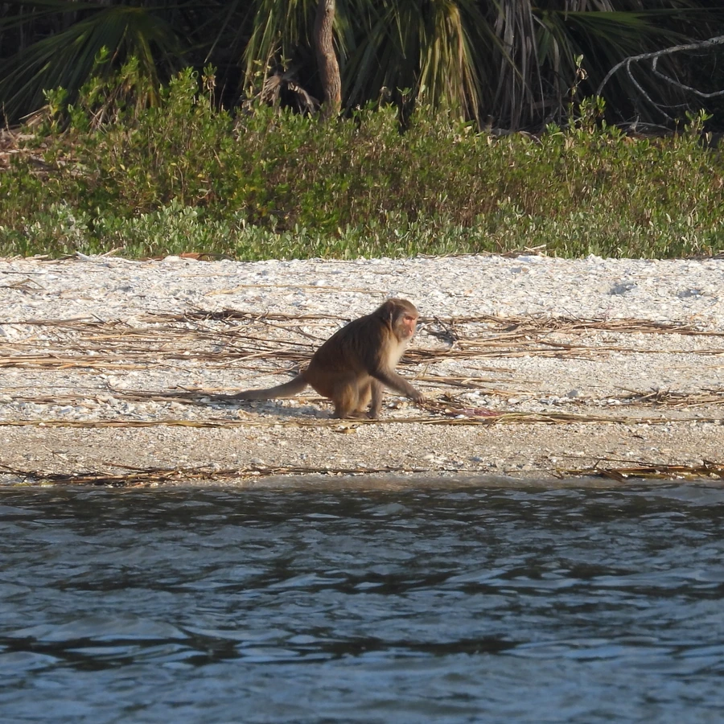

哺乳动物 · 动物界
猕猴 Macaca mulatta

分布最广的猴类之一，脸颊的颊囊可暂存食物，能适应从森林到城市边缘的多种环境，社会等级严格。
- 分类
- 门脊索动物门纲哺乳纲目灵长目科猴科属猕猴属
- 栖息环境
- 森林、灌丛、农田和城市边缘，从平原到海拔 3000 米的山地
- 地理分布
- 南亚、东南亚和东亚，中国长江流域及以南地区常见
- 保护级别
- IUCN 无危（LC）；中国国家二级保护动物
物种志
猕猴体长 0.4–0.6 米，尾长 0.2–0.3 米，体重 4–8 kg，雄性大于雌性。它的毛色为棕灰至黄褐色，面部裸露呈粉红色，臀部有红色胼胝；口腔两侧有颊囊，可把食物暂存其中带回安全处慢慢咀嚼。
猕猴分布于南亚、东南亚和东亚的森林、灌丛、农田乃至城市边缘，是分布最广的灵长类之一，食谱包括果实、嫩叶、种子、昆虫和小型动物。它们结成 10–50 只的群体，社会等级严格，个体通过理毛建立联盟；雌性终生留在出生的群中，雄性成年后迁往其他群。猕猴每年繁殖一次，妊娠期约 165 天，每胎 1 仔。由于适应力强且与人类活动区域重叠，猕猴常因取食农作物与人类发生冲突，部分地区还需控制种群数量。
形态与习性
- 食性果实、嫩叶、种子、昆虫和小型动物
- 体长0.4–0.6 m，尾长 0.2–0.3 m
- 体重4–8 kg
- 寿命野外约 15–20 年
- 繁殖妊娠期约 165 天，每胎 1 仔
- 社会结构10–50 只的群体，雌性留在出生群
- 特殊结构口腔有颊囊，可暂存食物
趣味知识
- 猕猴的颊囊能暂存大量食物，鼓起来像两个口袋。
- 人类 Rh 血型系统的名称来自恒河猴（猕猴）的学名缩写。
- 猕猴分布极广，从热带森林到城市郊区都能见到。
- 雌性猕猴终生留在出生群，雄性成年后迁往其他群体。